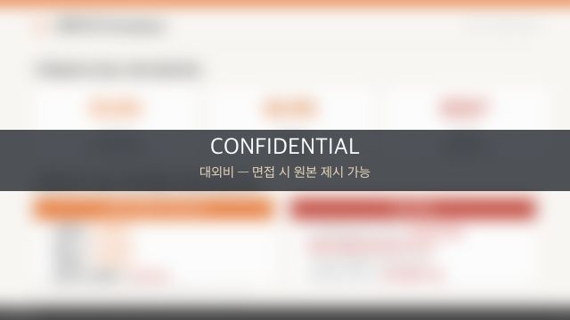

지역 검증 MVP를 전국 플랫폼으로 —
연 매출 2배 스케일업
문제 정의
식자재쿡은 영남권에서 검증을 마친 AI 기반 외식업 오퍼레이팅 플랫폼이었습니다. 그러나 성장에는 세 개의 구조적 병목이 있었습니다 — ① 서비스가 부산·경남 권역에 갇혀 있었고 ② 개발이 전량 외주여서 개선 속도가 로드맵을 따라오지 못했으며 ③ 물류센터의 재고·발주가 경험칙에 의존해 잉여재고가 자금 회전을 눌렀습니다.
가설
"영남권에서 검증된 모델을 그대로 복제하는 것이 아니라 수도권 상권 특성에 맞게 변형하고, 자산 투자 없이 물류 파트너십으로 전국망을 열고, 운영 데이터 기반으로 재고를 자동화하면 — 같은 자원으로 매출을 두 배 이상 키울 수 있다."
실행 — 직접 결정하고 리드한 것
- 수도권 맞춤형 서비스 모델 설계·진출 — 검증된 영남권 MVP를 기반으로 수도권 상권용 모델을 별도 구축
- 3PL/4PL 물류 파트너 3사 발굴 → MOU·공급계약 체결 — 자산 투자 없이 부산·경남 → 전국 단위 판로 확보
- ERP 권고발주(WMS) 기능 역제안 — 회전율 기반 수요예측 자동발주 시스템을 직접 설계해 개발 조직에 제안·탑재
- 외주 개발 체제 종료, 기술연구부 설립 주도 — 6인 개발팀 프로젝트 리드, 수도권 기업부설연구소 신설
- 얼라이언스 생태계 구축 — 단순 입점이 아니라 "외식업자에게 실제 도움이 되는가"를 기준으로 파트너 선별, 토스플레이스(POS)·KT하이오더 등 18개사 제휴·MOU
- 유저 온보딩 채널 강화 역제안 — 이탈 방지를 위한 리타겟팅 세그먼트 분리, 타겟별 맞춤 프로모션 설계
결과
2배연 매출 성장
(2025, 전년 대비 +100%)
(2025, 전년 대비 +100%)
−20%잉여재고액 감소
(자동발주 역제안 후)
(자동발주 역제안 후)
전국서비스 판로 확보
(물류 3사 계약)
(물류 3사 계약)
2.5억외부 개발 프로젝트 수주
(전략 역제안 주도)
(전략 역제안 주도)
내재화한 기술 조직은 비용이 아니라 수익이 됐습니다 — 투자 플랫폼 '에어포인트'에 플랫폼 고도화·시장침투 전략을 역제안해 2.5억 원 규모 개발 프로젝트를 수주했고, 같은 기간 정부지원사업 2건(부산창조경제혁신센터·동아대 초기창업패키지)에 선정됐습니다.
러닝
확장의 병목은 자금이 아니라 운영 데이터의 해상도였습니다. 재고·발주·고객 데이터가 정리되고 나서야 수도권 확장이 '감'이 아닌 계산 가능한 의사결정이 됐습니다. 그리고 외주 체제로는 그 해상도를 만들 수 없다는 것 — 내재화는 비용 절감이 아니라 성장의 전제조건이라는 것이 이 기간의 가장 큰 교훈입니다.
내가 직접 한 범위
전략 총괄(CSO/PO)로서 확장 로드맵·BM 고도화·파트너십 계약을 직접 주도했고, 온라인사업부 10명·물류사업부 24명 등 30여 명 조직을 리드했습니다. 경영관리부 업무 참여로 전사·부서 P&L 분석과 개선 제안, 영업 조직과의 고객 P&L 관리·온보딩 캠페인 설계까지 수행했습니다. 개발 실무는 기술연구부(6인)가, 제안·우선순위·검수는 제가 담당했습니다.
증빙 아카이브



🔒 직접 작성한 실물 문서입니다. 대외비 특성상 웹에서는 블러 처리했으며, 면접 시 원본을 제시할 수 있습니다. 데이터 분석 역량은 전략 아카이브의 대시보드 실물로 확인하실 수 있습니다.